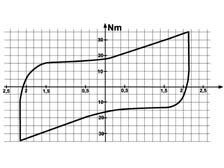
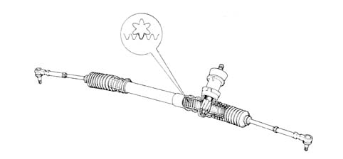

4120A rack and pinion steering box
- Path
- Descriptions > 41 STEERING > 4120 STEERING BOX > 4120A rack and pinion steering box
- Kind
- system description
- Applies to
- all engines; all production periods
- Interactive page
- https://sloeber94.github.io/elrnDB-fPnd/en/#/2750946
Applies to: all engines; all production periods
SPECIFICATIONS
Specifications:
- splitter ratio equal to 51 mm/fixed revolution
- steering wheel/wheel angle ratio equal to 15.8°/1°
- steering wheel revolutions: 3 for a rack travel of 152 mm
- turning circle: 9.3 m
Applies to: all engines; all production periods
SPECIFICATIONS
Specifications:
- splitter ratio equal to 38 mm/fixed revolution
- steering wheel/wheel angle ratio equal to 20°/1°
- steering wheel revolutions: ~ 4 for a rack travel of 152 mm
- turning circle: ~ 9.1 m
Constant ratio steering box

Applies to: all engines; all production periods
SPECIFICATIONS
The following figure shows a cross section through the constant ratio steering box and illustrates the rack and pinion teeth schematically.
